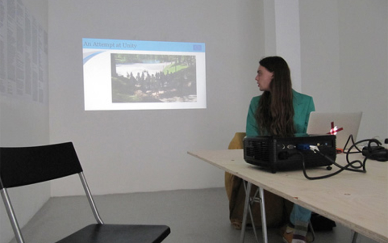
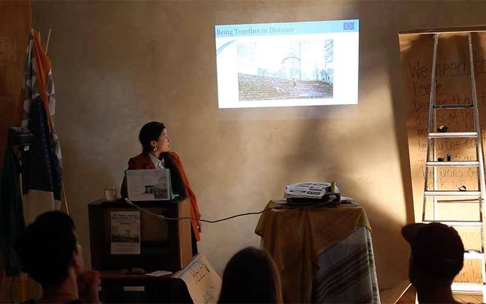

A European We ~ ~
 
To pluralise is to abstract.
To pluralise is too abstract.
We work collaboratively, presenting a precarious unity through the fictional facade of the Maybe Museum. A live, performed museum that responds to the archaic format of museum presentation, the Maybe Museum draws on stories, myths and objects from a local area to develop a walking tour through the museum of the physical world.
We work together, often separately. Until May, we will be in two different locations, performing our regular roles as artist and art historian respectively. We often disagree on what we mean to make.
This we, made up of composite eyes, will be working with Rucka Artist Residency in Latvia when Being Together Is Not Enough (is on). The development of the Museum’s tour will be full of fractured sightlines, searches for common ground and an emphasis on specific local textures -
And it is these that the eyes of the we will share with you. As a proposition for an idealistic European We (sadly due to expire by 2020), the Maybe Museum wants to be both here and there, singularly individual voices and a collective imaginary of we. Being somehow both non-corporeal and in the wrong location to be able to be together, the Museum offers Five Years an audio-visual guide of its self-questioning.
This audio-visual guide will perform the Maybe Museum’s potential routes through the Latvian town, possible collection and drafted attempts at an objective We of knowledge.With live interjections opening the floor to participation, the guide is unfinished, uncertain and adamantly pluralistic. Narrated in loops of layered contradictions and audible attempts to abstract I into we, this guide offers a London audience (also an abstract group of contentious collectivity) a tour that allows doubt to participate, disagreement to proliferate and the presence of two voices and their own multiplicities to create dissonance in a We.
To pluralise is too abstract.
We work collaboratively, presenting a precarious unity through the fictional facade of the Maybe Museum. A live, performed museum that responds to the archaic format of museum presentation, the Maybe Museum draws on stories, myths and objects from a local area to develop a walking tour through the museum of the physical world.
We work together, often separately. Until May, we will be in two different locations, performing our regular roles as artist and art historian respectively. We often disagree on what we mean to make.
This we, made up of composite eyes, will be working with Rucka Artist Residency in Latvia when Being Together Is Not Enough (is on). The development of the Museum’s tour will be full of fractured sightlines, searches for common ground and an emphasis on specific local textures -
And it is these that the eyes of the we will share with you. As a proposition for an idealistic European We (sadly due to expire by 2020), the Maybe Museum wants to be both here and there, singularly individual voices and a collective imaginary of we. Being somehow both non-corporeal and in the wrong location to be able to be together, the Museum offers Five Years an audio-visual guide of its self-questioning.
This audio-visual guide will perform the Maybe Museum’s potential routes through the Latvian town, possible collection and drafted attempts at an objective We of knowledge.With live interjections opening the floor to participation, the guide is unfinished, uncertain and adamantly pluralistic. Narrated in loops of layered contradictions and audible attempts to abstract I into we, this guide offers a London audience (also an abstract group of contentious collectivity) a tour that allows doubt to participate, disagreement to proliferate and the presence of two voices and their own multiplicities to create dissonance in a We.
45min lecture
Performed simultaneously at Rucka, Cesis, Latvia and Five Miles, London
Performed simultaneously at Rucka, Cesis, Latvia and Five Miles, London